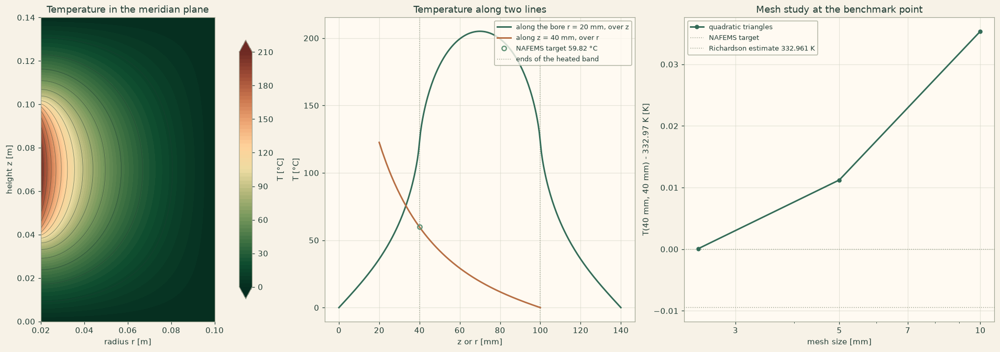
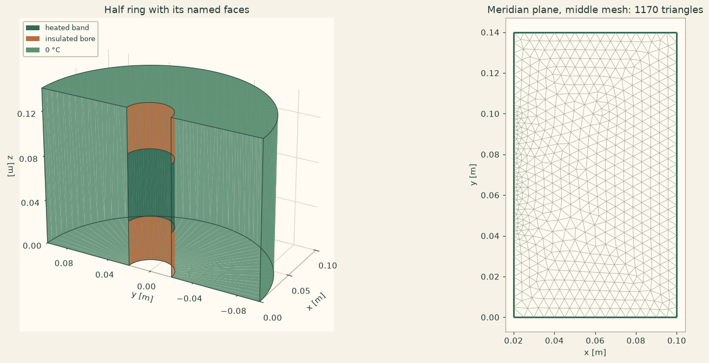

Docs › Examples › Axisymmetric ring heated in its bore
Heat conduction · 2D-axisymmetric
Axisymmetric ring heated in its bore
A NAFEMS benchmark for axisymmetric conduction: a thick steel ring heated over a band of its bore and held at 0 °C outside.
Run locally with OneSimulation. The example downloads are free. Running them requires an activated runtime. OneSimulation 1.0 · CPython 3.13 on macOS (Apple Silicon), Ubuntu 22.04 (x86-64), and Windows x64. Installation and activation · View pilot plans. Scope of the reference checks.


What it computes
OneSimulation reads the half ring from a STEP file, cuts its meridian plane and solves the heat equation with axisymmetric quadratic elements (RevolvedH1SpaceFactory) on three meshes. The script that builds the STEP file comes with the notebook.
What it checks
The temperature at r = z = 40 mm converges to 332.970 K against the NAFEMS target of 332.97 K (+0.0001 K on the finest mesh), and the 3769.91 W supplied through the band leave exactly through the cooled faces.
Geometry
The notebook starts at the import of the CAD file axisymmetric_ring_steady_conduction.step: STEP (AP242), readable by any CAD program, with the names of the faces that the boundary conditions use. Put it next to the notebook.


The geometry script
The script axisymmetric_ring_steady_conduction_geometry.py builds the geometry with the CAD objects of OneSimulation and writes the file. Change a dimension there, run it, and run the notebook again.
"""Geometry of the OneSimulation example "Axisymmetric steady conduction in a thick ring".
Builds half of a thick-walled steel ring (bore radius 20 mm, outer radius 100 mm, height 140 mm)
as a solid of revolution about the z axis with the CAD objects of OneSimulation and writes
axisymmetric_ring_steady_conduction.step. The bore is split into the heated band (z from 40 to
100 mm) and the insulated parts below and above it; the cooled faces are bottom, outer and top.
"""
import numpy as np
from onesim.cad.d2 import Path, Profile, Segment
from onesim.cad.d3 import Revolution
bore, outer, height, band = 0.02, 0.1, 0.14, (0.04, 0.10)
outline = Path(
(bore, 0.0),
(
Segment((outer, 0.0), name="bottom"),
Segment((outer, height), name="outer"),
Segment((bore, height), name="top"),
Segment((bore, band[1]), name="bore_above"),
Segment((bore, band[0]), name="heated"),
Segment((bore, 0.0), name="bore_below"),
),
)
ring = Revolution(profile=Profile(outline), angle=np.pi).rotated((0, 0, 1), -np.pi / 2)
ring.save("axisymmetric_ring_steady_conduction.step")The notebook
The complete notebook, cell by cell. Run it to produce the figures and the comparison printout.
A thick-walled ring (bore radius 20 mm, outer radius 100 mm, height 140 mm) is heated over a band of its bore and cooled on its other faces. Everything is symmetric about the axis, so the temperature depends on the radius \(r\) and the height \(z\) only:
| face | condition |
|---|---|
heated: bore \(r=20\) mm, \(40\le z\le100\) mm | heat flux \(q=5\times10^5\) W/m² into the ring |
bore_below, bore_above: rest of the bore | insulated |
bottom \(z=0\), outer \(r=100\) mm, top \(z=140\) mm | fixed temperature 0 °C (273.15 K) |
The flux jumps from zero to its full value at the ends of the heated band, so the temperature has steep gradients there.
The ring comes from the CAD file axisymmetric_ring_steady_conduction.step, half a solid of revolution; the script axisymmetric_ring_steady_conduction_geometry.py builds it with the CAD objects of OneSimulation and names the faces. The model is its meridian plane: \(x\) is the radius and \(y\) the height.
Reference. A. D. Cameron, J. A. Casey, G. B. Simpson, NAFEMS Benchmark Tests for Thermal Analysis (Summary), NAFEMS, 1986: the temperature at \(r=40\) mm, \(z=40\) mm is 332.97 K (59.82 °C). In addition, the heat leaving through the cooled faces must equal the heat supplied, \(q\cdot2\pi r_i\,(z_2-z_1)=3769.9\) W.
import numpy as np
from onesim.cad.exchange import load
from onesim.materials import IsotropicSolid
from onesim.meshing import TriangularMesher
from onesim.numerics import Numerics
from onesim.numerics.fem import FiniteElement, Lagrange, RevolvedH1SpaceFactory
from onesim.numerics.linear import SparseDirect
from onesim.physics.heat_transfer import FixedTemperature, HeatConduction, HeatFlux
from onesim.results.comparisons import convergence
from onesim.simulation import Problem, Simulation
from onesim.visualization import plots, theme
theme.set()Geometry and mesh
load returns the half ring with its named faces; section with the plane \(y=0\) returns the meridian plane, whose sides keep the names of the faces they were cut from. Three triangular meshes halve the cell size from one to the next and are finer along the heated band.
ring = load("axisymmetric_ring_steady_conduction.step")
faces = ring.boundaries
plane = ring.section((0, 1, 0))
sides = plane.boundaries
sizes = [0.01, 0.005, 0.0025]
meshes = [
TriangularMesher(
target_size=size, grading=0.25, local_sizes={"heated": size / 3}
).generate(plane)
for size in sizes
]
fig = plots.figure(1, 2, size=(14, 6))
plots.geometry(
ring,
selection={
"heated band": faces.heated,
"insulated bore": faces.bore_below | faces.bore_above,
"0 °C": faces.bottom | faces.outer | faces.top,
},
labels=False,
camera=plots.Camera(elevation=25, azimuth=-150),
title="Half ring with its named faces",
ax=fig[0],
)
plots.mesh(
meshes[1],
groups=("all",),
legend=False,
title=f"Meridian plane, middle mesh: {meshes[1].cell_count} triangles",
ax=fig[1],
)
plots.show()Model
RevolvedH1SpaceFactory turns the quadratic Lagrange space of the meridian plane into an axisymmetric one (integration weight \(2\pi r\)). A positive HeatFlux leaves the body, so the heating enters with a negative sign.
steel = IsotropicSolid(
density=7850.0,
specific_heat_capacity=460.0,
thermal_conductivity=52.0,
youngs_modulus=2.1e11,
poisson_ratio=0.3,
thermal_expansion_coefficient=1.2e-5,
)
model = HeatConduction(domain=plane.domain(), material=steel, heating=0.0)
problem = Problem(
name="Axisymmetric ring",
geometry=plane,
physics=(model,),
boundary_conditions=(
FixedTemperature(
boundary=sides.bottom | sides.outer | sides.top, physics=model, value=273.15
),
HeatFlux(boundary=sides.heated, physics=model, value=-5e5),
HeatFlux(
boundary=sides.bore_below | sides.bore_above, physics=model, value=0.0
),
),
)
numerics = Numerics(
spatial=FiniteElement(element=Lagrange(order=2), provider=RevolvedH1SpaceFactory()),
linear_solver=SparseDirect(),
)
fields = [
Simulation(problem=problem, mesh=mesh, numerics=numerics)
.solve_stationary()
.field(model.temperature)
for mesh in meshes
]
field = fields[-1]Results
The temperature at the benchmark point on each mesh with the Richardson estimate, and the heat balance of the whole ring.
target = [float(f.evaluate([[0.04, 0.04]])[0]) for f in fields]
study = convergence(target, sizes)
supplied = 5e5 * 2 * np.pi * 0.02 * 0.06
print("mesh size [mm] triangles T(40 mm, 40 mm) [K] deviation from 332.97 K")
for size, mesh, value in zip(sizes, meshes, target):
print(
f"{1e3 * size:14.1f} {mesh.cell_count:11d} {value:21.4f} {value - 332.97:+16.4f} K"
)
print(
f"observed order {study.order:.2f}, Richardson estimate {study.extrapolated:.4f} K"
)
print(
f"heat supplied {supplied:.2f} W, heat entering at the band {-field.boundary_flux(sides.heated):.2f} W, "
f"heat leaving through the cooled faces {field.boundary_flux(sides.bottom | sides.outer | sides.top):.2f} W"
)Figure
The temperature in the meridian plane, the temperature along the bore and along the line \(z=40\) mm through the benchmark point, and the mesh study.
z = np.linspace(0, 0.14, 281)
r = np.linspace(0.02, 0.1, 161)
fig = plots.figure(1, 3, size=(19, 6))
plots.surface(
field,
component=lambda T, position: T - 273.15,
limits=(0, 210),
contours=15,
subdivisions=3,
xlabel="radius r [m]",
ylabel="height z [m]",
label="T [°C]",
title="Temperature in the meridian plane",
ax=fig[0],
)
plots.line(
y={
"along the bore r = 20 mm, over z": (
1e3 * z,
field.evaluate(np.column_stack((np.full_like(z, 0.02), z))).ravel()
- 273.15,
),
"along z = 40 mm, over r": (
1e3 * r,
field.evaluate(np.column_stack((r, np.full_like(r, 0.04)))).ravel()
- 273.15,
),
},
points={"NAFEMS target 59.82 °C": ([40.0], [59.82])},
vlines={"ends of the heated band": 40.0, "": 100.0},
xlabel="z or r [mm]",
ylabel="T [°C]",
title="Temperature along two lines",
legend="upper right",
ax=fig[1],
)
plots.line(
y={
"quadratic triangles": (
1e3 * np.array(sizes),
[value - 332.97 for value in target],
)
},
hlines={
"NAFEMS target": 0.0,
f"Richardson estimate {study.extrapolated:.3f} K": study.extrapolated - 332.97,
},
markers=True,
scale="logx",
xlabel="mesh size [mm]",
ylabel="T(40 mm, 40 mm) - 332.97 K [K]",
title="Mesh study at the benchmark point",
ax=fig[2],
)
plots.show()Going further
Move or widen the heated band in axisymmetric_ring_steady_conduction_geometry.py and write the STEP file again, or replace the fixed outer temperature by a convective condition (ConvectiveHeatFlux) and watch the whole ring warm up.